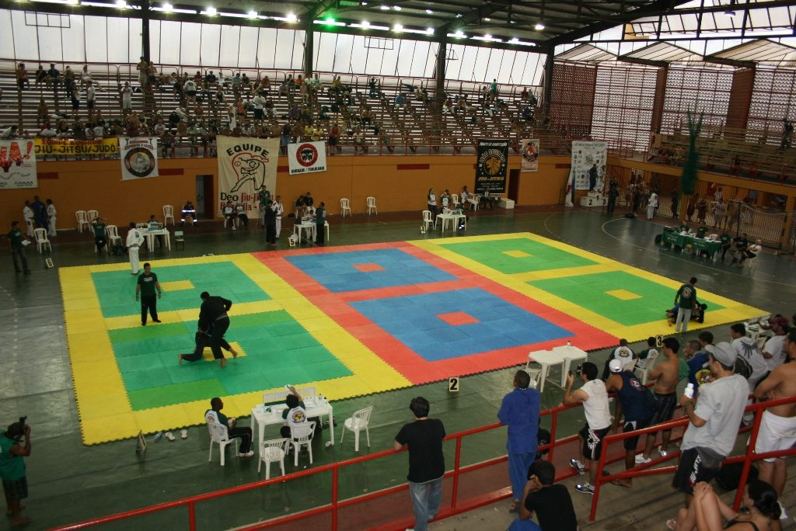
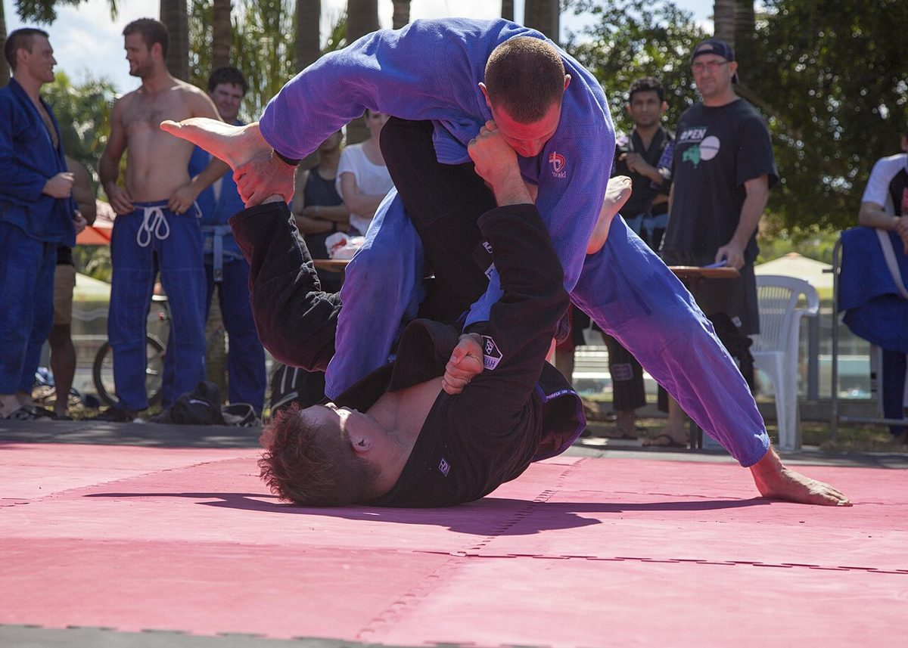
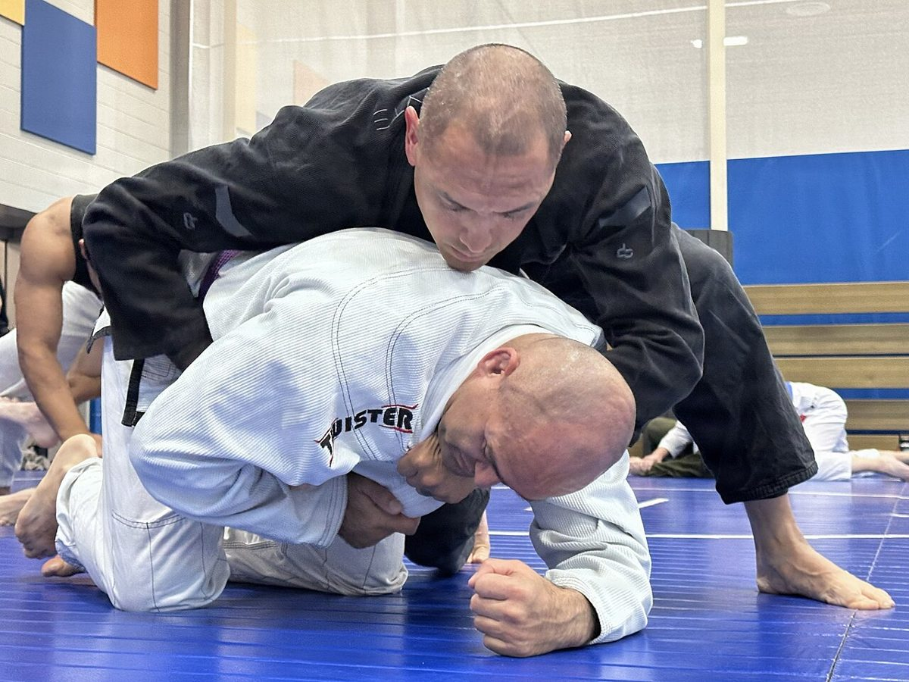
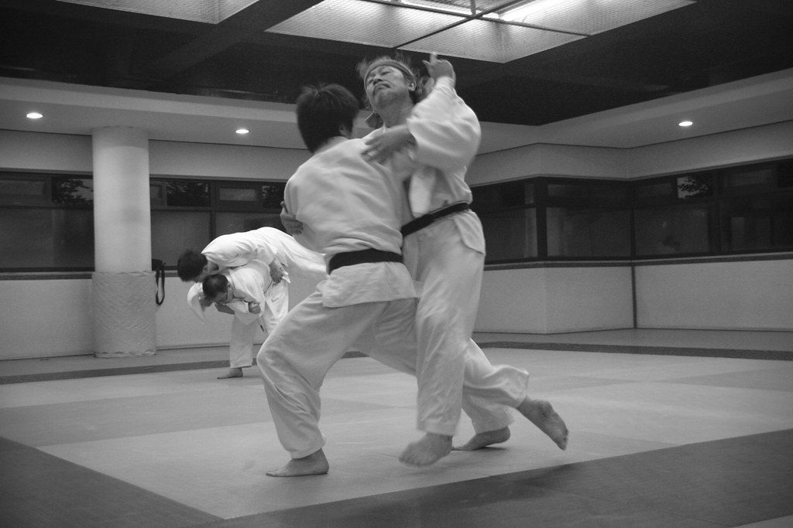
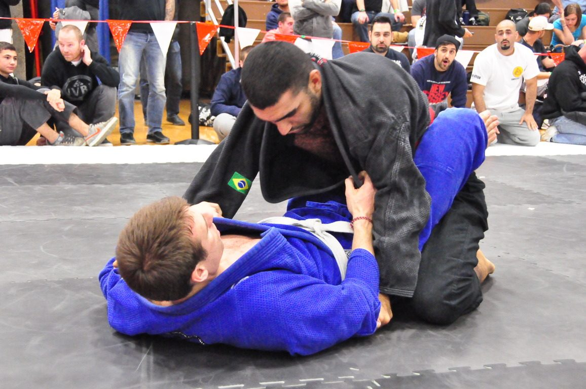
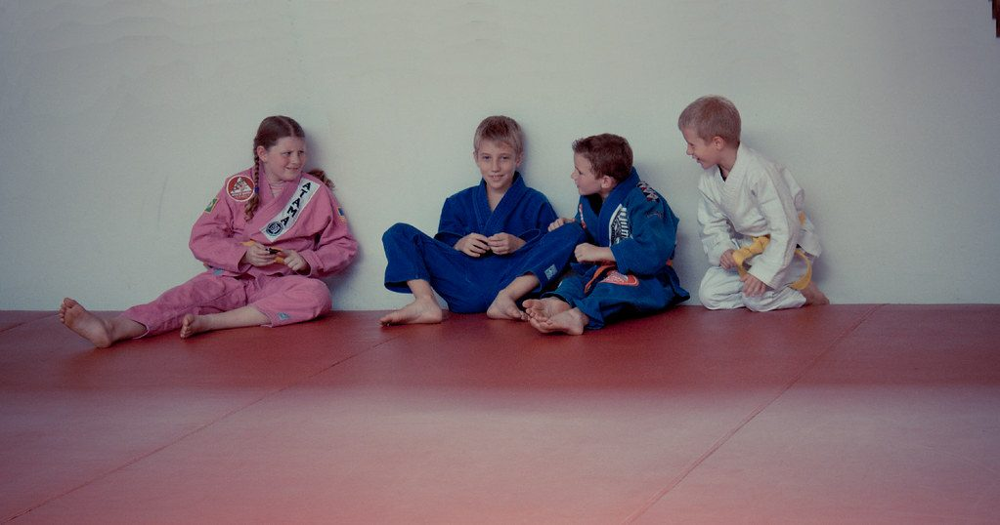

Fala, galera! Você já parou pra pensar que acompanhar o jiu-jitsu hoje é como tentar beber água direto da mangueira do bombeiro? É campeonato todo fim de semana, live, polêmica, corte de 30 segundos no Instagram... e no fim você não sabe o que realmente importa.
Por isso nasceu o Resumo da Semana no Jiu-Jitsu. Todo domingo eu separo o que de mais relevante rolou nos últimos 7 dias e comento do jeito que a gente conversa na beira do tatame: do ponto de vista de quem treina por hobby, tem trabalho, família e dois ou três treinos por semana quando dá. Nada de guru, nada de enrolação.
Essa é a primeira edição. Bora lá!
1. Pan Pacific: o bronze que virou ouro

O que rolou: o Pan Pacific da IBJJF foi disputado em Melbourne, na Austrália, com o sem kimono na sexta (16) e o com kimono no sábado (17). No pena da faixa-preta, o japonês Kazuhiro Suzuki (Tri-Force) venceu Jonathan Santos (Nova União) na final, depois de ter ficado com o bronze nessa mesma categoria em 2023, 2024 e 2025. No ultrapesado, Thomas Messo (Australian Elite Team) foi campeão um dia depois de perder a final do meio-pesado no sem kimono. E Olivia Schauer levou ouro duplo, na categoria e no absoluto. Fonte: Fabric Jiu-Jitsu.
Cara, três bronzes seguidos na mesma categoria. Três anos subindo no terceiro degrau do pódio e voltando pra casa pensando "quase". Muita gente teria largado o campeonato, trocado de categoria ou arrumado uma desculpa. O Suzuki voltou pela quarta vez e levou o ouro. E repara no Messo: perdeu uma final num dia e no dia seguinte ganhou outra. Não deu nem tempo de ficar remoendo.
Pra gente que não compete, a lição é a mesma. Sabe aquela posição que você tenta há meses e não sai? Aquele colega que sempre te pega na mesma armadilha? Esse é o seu bronze. O que muda o resultado não é um treino mágico, é voltar na semana seguinte com um ajuste pequeno. Na prática: escolha UMA coisa que te pegou essa semana e leve ela como objetivo do próximo rola.
2. Brian Glick: treinar todo dia não é treinar pesado todo dia

O que rolou: Brian Glick, faixa-preta e aluno de longa data de John Danaher, contou numa entrevista que repercutiu essa semana como segue treinando todos os dias depois dos 50 anos. Ele carrega quase 25 anos de desgaste: uma lesão no menisco de uns 18 anos atrás (no mesmo dia em que pegou a faixa roxa), artrose e ombros que já não chegam em certas amplitudes. O segredo, segundo ele, veio do Danaher: dá pra estar no tatame todo dia sem treinar pesado todo dia, e lesão faz parte do caminho até a preta, não é sinal de que você fez tudo errado. Fonte: Sinistro News.
Essa bateu forte no tio aqui. Eu comecei em 2015, tenho um calcanhar esquerdo que nunca ficou 100% e, vamos combinar, tem semana que levantar da cama no dia seguinte ao treino já é uma vitória. O pulo do gato da fala do Danaher é separar presença de intensidade. A maioria de nós faz o contrário: treina pouco e, quando treina, vai com tudo, como se fosse a final do Mundial. Resultado? Lesão, semanas parado, volta, se machuca de novo.
Ninguém aqui vai treinar todo dia como o Glick, e tá tudo bem. Mas a lógica vale igual pra quem tem dois ou três treinos na semana: o objetivo é conseguir estar lá na semana que vem. Na prática: no dia em que o corpo estiver reclamando, não falte. Vai, faz o aquecimento, o drill, um rola leve com um parceiro tranquilo ou só assiste à aula e anota. Contou como treino. Se você tem 35, 40, 50 anos, eu escrevi mais sobre isso aqui: Como Treinar 4x Por Semana Depois dos 35 Sem Se Quebrar.
3. O drill morreu? Um campeão de judô diz que não

O que rolou: Owen Livesey, ouro no judô dos Jogos da Commonwealth, entrou na discussão sobre parar de fazer drill no jiu-jitsu e discordou: pra ele, "não existe segredo". Livesey treinou judô em tempo integral por oito anos e disse que os medalhistas olímpicos que conheceu fazem repetição todo dia. Ele também passou duas semanas com o grupo de John Danaher na Renzo Gracie Academy, onde a aula tinha de seis a oito drills de técnica antes do sparring, que era pesado, mas muito seguro. Hoje, sem tempo pra drillar, ele entra no rola com objetivos definidos: uma finalização, uma passagem ou uma defesa. Fonte: Sinistro News.
Toda hora aparece alguém na internet dizendo que o drill morreu e que o futuro é só rola ou só "jogos". Pensa comigo: se a turma do Danaher, que ganhou praticamente tudo, fazia de seis a oito drills antes de rolar, quem sou eu pra dizer que repetição não serve? Não é que um método mata o outro. Repetição sem resistência constrói o movimento, rola com resistência testa o movimento. Um sem o outro fica capenga.
Mas a parte que eu mais gostei foi a honestidade dele: hoje não tem tempo pra drillar. Bem-vindo ao clube, Owen! E a solução que ele encontrou é exatamente o que eu bato na tecla no canal. Rola não é competição. Rola é laboratório. Na prática: se você só tem uma hora de aula, chegue com uma pergunta na cabeça. "Hoje eu vou trabalhar a saída da montada." "Hoje eu só vou tentar essa passagem." E não precisa contar pro parceiro.
4. Caso Kabuto: o que um golpe proibido nos lembra

O que rolou: o caso do faixa-preta Willian Hiroyuki Masuda, o Kabuto, voltou a repercutir essa semana. Ele sofreu uma lesão grave na coluna cervical numa luta do Super Pro Jiu-Jitsu, em agosto, em Londrina (PR), depois de ser levado ao chão de cabeça num "bate-estaca", movimento proibido pelas regras. Passou por cirurgia de emergência e hoje se recupera em casa. A Polícia Civil do Paraná investiga o caso a pedido do Ministério Público, e os próximos passos são a perícia do IML e o depoimento do outro atleta, que não foi indiciado. A defesa dele pede que se aguarde a investigação antes de qualquer julgamento, e ele disse que vai colaborar. Fonte: Sinistro News.
Primeiro de tudo: força pro Kabuto e pra família dele. Lesão cervical não é brincadeira, e ver um faixa-preta sair de uma luta direto pra cirurgia de emergência dá um aperto no peito. Eu trabalhei 5 anos na Polícia Civil e sei que inquérito tem rito: testemunha, perícia, laudo. Então aqui eu não vou julgar ninguém. Quem vai dizer o que aconteceu é a investigação.
Mas dá pra tirar uma lição que vale pra todo mundo, inclusive pro treino de terça à noite. O bate-estaca é proibido justamente porque o pescoço não tem segunda chance. No calor do rola, quando o cara tá pendurado na sua perna, o instinto pode ser levantar e jogar. Treine o reflexo contrário: abaixar o quadril, controlar e levar pro chão com segurança. O seu colega de treino precisa trabalhar amanhã. Ego nenhum vale o pescoço de alguém.
5. Jiu-jitsu que muda vida: garotos de projeto social no pódio em Lisboa

O que rolou: três jovens de comunidades do Rio de Janeiro, atendidos pelo projeto social Geração UPP, voltaram de Lisboa com quatro medalhas (dois ouros e duas pratas) em competições da IBJJF disputadas entre 9 e 11 de outubro. Davi Carvalho, do Morro da Providência, foi campeão da categoria dele no Europeu Infantil, e Bernardo da Silva, o "Bernardo Pitbull", da Nova Brasília, ficou com a prata. Ana Laura, também da Nova Brasília, ganhou ouro no sem kimono e prata no com kimono no Lisboa Open. As passagens foram pagas pela Secretaria estadual de Esporte e Lazer. Fonte: Extra.
Essa é daquelas notícias que me lembram por que o canal se chama Além da Técnica. Medalha é legal, mas o que fica é o que o tatame faz com a cabeça de uma criança: disciplina, respeito, saber perder e voltar no dia seguinte. Eu vi isso dentro de casa. Meu filho parou de sofrer bullying depois de uns seis meses de jiu-jitsu.
E repara que essa viagem só aconteceu porque teve apoio. Projeto social de luta não é gasto, é investimento. Se a sua academia tem bolsista, ajuda como puder: um kimono que você não usa mais, uma carona pro campeonato, um pouco de paciência com o garoto novo no rola. Você não precisa ser faixa-preta pra fazer diferença na vida de alguém.
De olho na agenda
- 29 de outubro: UFC BJJ 13, em Las Vegas, com dois cinturões vagos em jogo: William Tackett x Jay Rodriguez no peso médio e Jalen Fonacier x Kleber Barboza no galo. Fonte: 40andFighting.
- 8 de novembro: The Crown, o torneio de convidados da IBJJF, em Long Beach, com a volta do tricampeão Erich Munis, Gabi Pessanha atrás do quarto título e Sarah Galvão defendendo o peso leve. Fonte: Sinistro News.
Resumo da ópera
- O Suzuki precisou de três bronzes pra chegar no ouro. O seu "quase" de hoje é parte do caminho.
- Presença vale mais que intensidade. Treinar leve é melhor do que faltar.
- Drill e rola não brigam. Sem tempo pra drillar? Entre no rola com um objetivo.
- Segurança do parceiro vem antes de qualquer vitória, no campeonato ou na terça à noite.
- O jiu-jitsu muda vidas fora do tatame, e qualquer faixa pode ajudar.
Se tiver aquele colega de treino que vive se machucando porque treina como se fosse final de Mundial, manda esse texto pra ele.
Consistência bate talento quando o talento não é consistente.
Nos vemos no tatame. Oss!
Receba o resumo da semana no seu e-mail
Quer receber conteúdo como esse direto no seu e-mail? Entra na newsletter. É pra quem treina de verdade, tem trabalho, família e quer evoluir no tatame sem enrolação. É de graça.